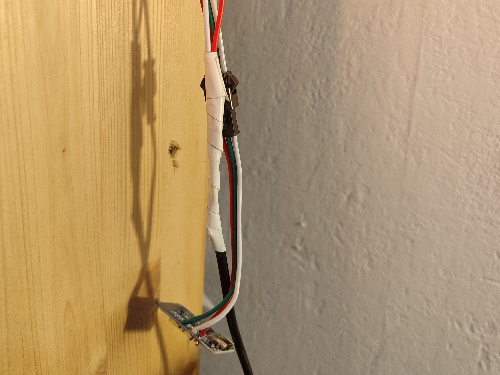

Triangle connecté Wled
ANNÉE
2025
CATÉGORIES
Conception
Programmation
DESCRIPTION
Ce tutoriel vous explique comment construire un triangle "nanoleaf" à l'aide d'un ruban led et d'un ESP.Ce triangle se contrôle avec une application mobile,Home Assisstant ou un Stream Deck
MATÉRIEL REQUIS
- D1 mini(ou autre carte Arduino disposant d'une connexion Wifi)
- Ruban led(je conseille le WS2812B,qui coûte environ 5€,max 100leds/m)
- Les pièces à imprimer en 3d
OUTILS NÉCESSAIRE
- Ordinateur
- Imprimante 3d
- Fer à souder
PLATEFORME
WLED
BONUS
- Connexion à Home Assisstant
- Connexion à un Stream Deck
TUTORIEL
Le câblage
Pour mener à bien ce projet, assurez vous d'avoir tous les composant.
Vous allez commencez par couper votre ruban tous les 28,5cm environ,puis
souder votre carte Arduino à votre ruban led en suivant le brochage :
Vous pouvez utiliser le connecteur fourni avec vos leds pour le premier triangle,
mais il faudra souder sur le ruban pour les suivants(si comme moi,vous avez pris plus de 100leds/m,
la soudure est très compliqué).
Câblage :
Vous devriez obtenir ça:
